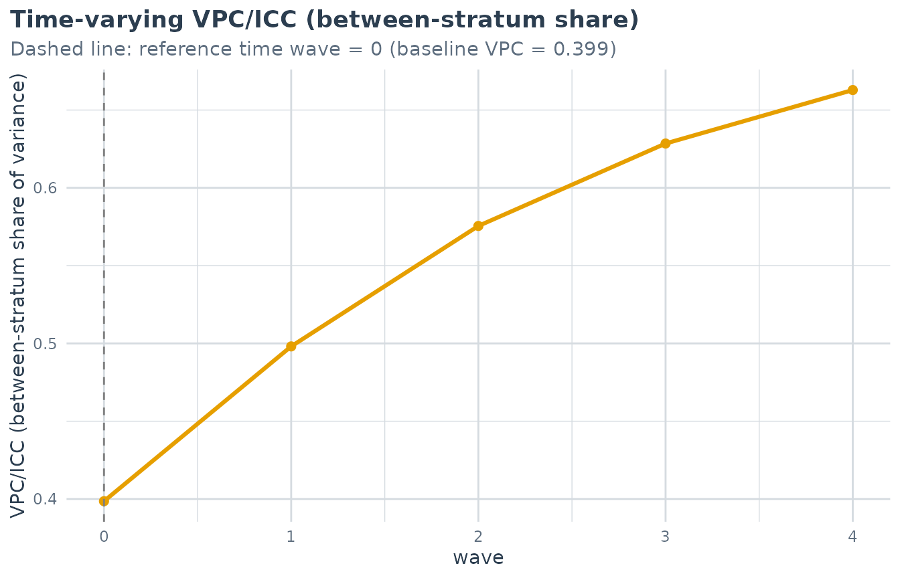
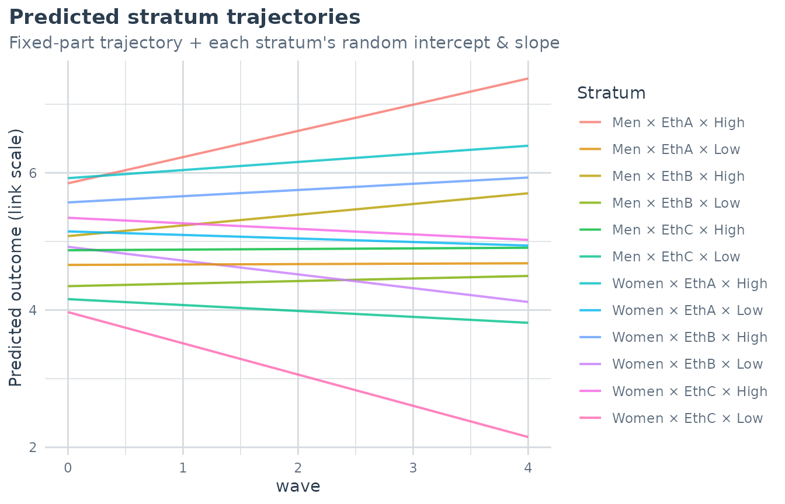
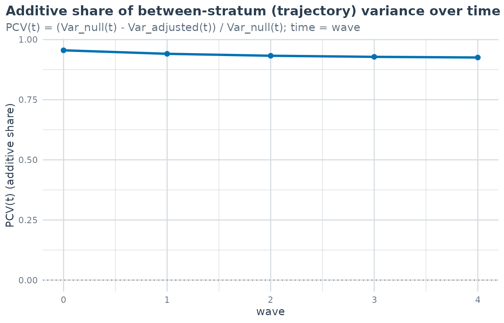

Longitudinal MAIHDA: intersectional inequalities over time
Hamid Bulut
2026-07-09
Source:vignettes/longitudinal.Rmd
longitudinal.RmdFrom a snapshot to a trajectory
Standard (cross-sectional) MAIHDA answers “do intersectional strata differ?” at a single point in time, summarised by the between-stratum VPC. With repeated measurements we can ask a richer question: “do strata differ in how they change over time?” – and decompose those trajectory differences into an additive part (the dimensions’ main effects and their interactions with time) and a multiplicative part (an intersectional trajectory beyond additive).
This is the longitudinal MAIHDA of Bell, Evans, Holman & Leckie (2024). It is a 3-level growth-curve model with measurement occasions (level 1) within individuals (level 2) within intersectional strata (level 3), with a random intercept and a slope on time at both the individual and stratum levels:
Because the stratum random effect now has a slope, the between-stratum variance becomes a function of time:
The data
The bundled maihda_long_data is a simulated panel: 600
people, each measured over five waves, within 12 strata of gender
ethnicity
education. The trajectory differences are constructed to be mostly
additive with one genuine interaction, so the decomposition below is
interpretable.
data(maihda_long_data)
head(maihda_long_data)
#> id wave gender ethnicity education age wellbeing low_wellbeing
#> 1 P0001 0 Men EthB Low 50 3.732 1
#> 2 P0001 1 Men EthB Low 50 3.696 1
#> 3 P0001 2 Men EthB Low 50 1.638 1
#> 4 P0001 3 Men EthB Low 50 3.585 1
#> 5 P0001 4 Men EthB Low 50 3.594 1
#> 6 P0002 0 Women EthB Low 56 5.631 0It is long format, one row per person-occasion, with a person id
(id) and a numeric time (wave).
Fitting and the time-varying VPC
Supply id and time to
fit_maihda(). You only need to write the strata shorthand
(1 | var1:var2); the growth slopes on time are added for
you.
m <- fit_maihda(wellbeing ~ wave + (1 | gender:ethnicity:education),
data = maihda_long_data, id = "id", time = "wave")
#> Warning in checkConv(attr(opt, "derivs"), opt$par, ctrl = control$checkConv, : Model failed to converge with max|grad| = 0.00213664 (tol = 0.002, component 1)
#> See ?lme4::convergence and ?lme4::troubleshooting.
summary(m)
#> MAIHDA Model Summary
#> ====================
#>
#> Fit diagnostics:
#> Convergence warnings reported by lme4:
#> - Model failed to converge with max|grad| = 0.00213664 (tol = 0.002, component 1)
#> See ?lme4::convergence and ?lme4::troubleshooting.
#>
#>
#> Variance Partition Coefficient (VPC/ICC) at baseline (wave = 0):
#> Estimate: 0.3986
#>
#> Variance Components:
#> component variance sd
#> Between-stratum: intercept (time = 0) 0.407878 0.6387
#> Between-stratum: slope (wave) 0.042860 0.2070
#> Between-stratum: intercept-slope covariance 0.088498 NA
#> Between-individual (id): intercept (time = 0) 0.255609 0.5056
#> Between-individual (id): slope (wave) 0.019360 0.1391
#> Between-individual (id): intercept-slope covariance -0.001107 NA
#> Within (residual) 0.359816 0.5998
#>
#> Time-varying VPC/ICC (between-stratum share over wave):
#> range 0.3986 to 0.6629 across wave in [0, 4].
#> The between-stratum variance is a function of time (random intercept +
#> slope), so the VPC varies; it depends on where time is zeroed. See
#> plot(type = "vpc_trajectory") for the full curve.
#>
#> Fixed Effects:
#> term estimate
#> (Intercept) 4.986466
#> wave -0.006306
#>
#> Stratum baseline (intercept) deviations (first 10):
#> stratum stratum_id label random_effect se lower_95 upper_95
#> 1 1 Men × EthB × Low -0.63796 0.08953 -0.81344 -0.4625
#> 2 2 Women × EthB × Low -0.06459 0.08595 -0.23305 0.1039
#> 3 3 Men × EthA × High 0.86072 0.07783 0.70819 1.0133
#> 4 4 Men × EthB × High 0.09121 0.10260 -0.10988 0.2923
#> 5 5 Women × EthA × High 0.93602 0.08804 0.76345 1.1086
#> 6 6 Women × EthC × High 0.35851 0.13545 0.09302 0.6240
#> 7 7 Men × EthC × High -0.11460 0.13287 -0.37503 0.1458
#> 8 8 Men × EthA × Low -0.32848 0.07050 -0.46667 -0.1903
#> 9 9 Women × EthA × Low 0.15992 0.07326 0.01633 0.3035
#> 10 10 Men × EthC × Low -0.82710 0.13287 -1.08753 -0.5667
#> ... and 2 more strata
#> (random slope not shown; use predict(type = "strata") for the per-stratum intercept and slope, or plot(type = "trajectories")).summary() reports the VPC at the baseline (reference
time, the earliest wave) and the full trajectory of the VPC across the
observed times. Plot it:
plot(m, type = "vpc_trajectory") # VPC(t), with the reference time marked
plot(m, type = "trajectories") # predicted per-stratum mean trajectories
A rising VPC trajectory means the strata fan out over time (intersectional inequality grows).
Decomposing the trajectory: additive vs. multiplicative
maihda(decomposition = "longitudinal") (selected
automatically when id/time are supplied) fits
a null growth model and an adjusted growth model. The adjusted model
adds the dimensions’ main effects and their interactions with time
(dim:time), so the stratum-level variance it leaves behind
is the interaction beyond additive.
a <- maihda(wellbeing ~ wave + (1 | gender:ethnicity:education),
data = maihda_long_data, id = "id", time = "wave",
decomposition = "longitudinal")
#> Warning in checkConv(attr(opt, "derivs"), opt$par, ctrl = control$checkConv, : Model failed to converge with max|grad| = 0.00213664 (tol = 0.002, component 1)
#> See ?lme4::convergence and ?lme4::troubleshooting.
a$pcv
#> Longitudinal PCV (additive vs. multiplicative intersectionality)
#> ================================================================
#>
#> Baseline (wave = 0) variance: 0.3726 (null) -> 0.0166 (adjusted)
#> PCV_intercept: 95.5% of the baseline between-stratum inequality is additive.
#> Slope (wave) variance at baseline: 0.0392 (null) -> 0.0031 (adjusted)
#> PCV_slope: 92.2% of the *trajectory* between-stratum inequality is additive
#> (the remainder is the multiplicative/interaction part).
#>
#> The PCV is the share of the null model's between-stratum (trajectory) variance
#> explained by the dimensions' additive main effects and their time interactions;
#> a high PCV_slope means trajectory inequalities are 'mostly additive'.
#> (REML growth fits were refitted with maximum likelihood for this comparison --
#> REML variances are not comparable across the null vs. adjusted fixed effects --
#> so these variances are on the ML scale; summary()'s time-varying VPC keeps
#> each fit's own REML estimate. See ?calculate_pcv.)
#> The PCV is reported separately for the two pieces of the trajectory:
-
PCV_intercept– the share of the baseline between-stratum inequality explained by the additive main effects. -
PCV_slope– the share of the trajectory (slope) between-stratum inequality explained additively. A highPCV_slopeis the “trajectories are mostly additive” finding; the remainder is the multiplicative/interaction part.
plot(a, type = "pcv_trajectory") # the additive share over time
Scope and cautions
-
Time coding. You can code time however is natural –
waves 0, 1, 2, …, waves 10, 11, …, age, or calendar year. When the axis
does not start at 0, the growth terms are fit on internally
centered time (
time - min(time), with a message), because the raw polynomial basis over an offset range is ill-conditioned and can silently converge to a wrong solution. All results – the VPC trajectory, the PCV, plots, and predictions – are reported on your original time scale, and the baseline (ref_time) is always the earliest observed time. - Identifiability. A stratum random slope needs enough occasions per stratum; sparse strata or few waves can give a singular lme4 fit (surfaced in the fit diagnostics) – the brms engine handles this better.
-
Not a single number. The VPC is time-varying, so
extract_between_variance()andcalculate_pcv()deliberately refuse a longitudinal model; use the longitudinal decomposition above. -
Out of scope (v1). Design-weighted, contextual
(stratum
place
time), and
wemix/ordinallongitudinal models are not yet supported.
Reference
Bell, A., Evans, C., Holman, D., & Leckie, G. (2024). Extending intersectional multilevel analysis of individual heterogeneity and discriminatory accuracy (MAIHDA) to study individual longitudinal trajectories, with application to mental health in the UK. Social Science & Medicine, 351, 116955. doi:10.1016/j.socscimed.2024.116955